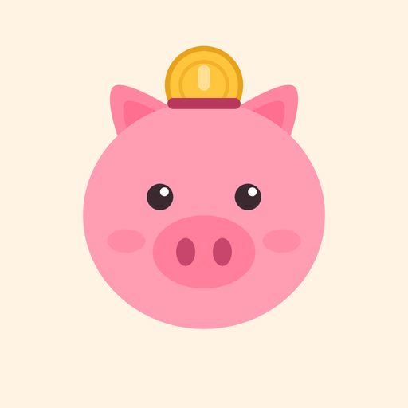

つもりぶた
がまんをワンタップで貯金に。ログイン不要のつもり貯金・目標貯金アプリ
アプリの概要
カフェやコンビニ、衝動買いなど、がまんしたお金をワンタップで「つもり貯金」として記録し、旅行やほしい物などの目標に近づいていくアプリです。iPhone（App Store）と Android（Google Play）で公開予定です。
- ☕ がまんボタンをタップするだけで記録（長押しで金額・貯め先を変更）
- 🎯 目標別に貯められる。期限を決めると「1日あたりいくら」を自動計算
- 🔥 連続記録・カレンダー・目標達成のお祝い画面
- 🔒 ログイン不要。データは端末の中だけに保存。バックアップ・復元は無料
- 👑 プレミアムは買い切り（サブスクリプションではありません）
よくある質問
機種変更するときは？
設定 →「バックアップを保存」でファイルを保存し、新しい端末で 設定 →「バックアップファイルから復元」を選んでください。iPhone と Android の間でも移行できます。バックアップと復元は無料です。
プレミアムを買ったのに反映されない / 再インストールした
アプリを起動すると自動で購入状態を確認します。反映されない場合は、設定 →「購入を復元」を押してください。購入時と同じ Apple ID / Google アカウントでご利用ください。
プレミアムはサブスクリプションですか？
いいえ。一度の購入でずっと使える買い切りです。自動で更新・請求されることはありません。
データはどこに保存されますか？
お使いの端末の中だけに保存されます。ログインは不要で、開発者のサーバーには送信されません。
通知が届かない
その日にまだ記録していないときだけ通知します。届かない場合は、端末の設定で「つもりぶた」の通知が許可されているかご確認ください。
お問い合わせ
不具合やご要望は、メールでお知らせください。
メール：【お問い合わせ用メールアドレス】